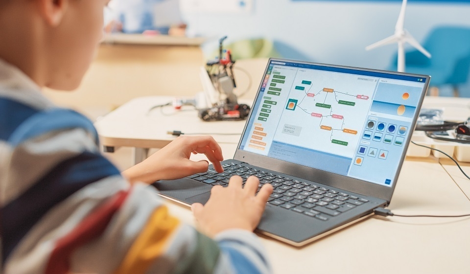

Специализаций в IT существует огромное множество. Выбирать направление следует из своих интересов, так как каждая специализация имеет свои особенности. Например, если вам нравится прикладное конструирование, то для изучения подойдет робототехника, если же вычислительные задачи, то — фундаментальная информатика. Популярными направлениями в вузах являются Computer Science или прикладная информатика, программная инженерия. Компьютерные науки — общая и разносторонняя отрасль изучения, которая имеет различные ответвления (искусственный интеллект, компьютерные системы и сети, безопасность). Набирает обороты такая специализация, как Data Science, подразумевающая работу со статистикой и математикой[4].
В качестве перспективных направлений на будущее можно выделить компьютерную безопасность и искусственный интеллект.
Кибербезопасность. С внедрением использования технологий во всех сферах жизнедеятельности человека: от покупки продуктов до управления государством, появляется все больше хакеров и кибертеррористов. Они вредят как отдельным людям, так и правительственным учреждениям и крупным компаниям. Поэтому в современном мире защита данных — не роскошь, а жизненная необходимость. Чтобы защититься от кибератак и нарушений безопасности, ведущие организации готовы платить большие деньги за кибераналитиков. По прогнозам Бюро статистики труда США, число рабочих мест в сфере кибербезопасности вырастет на 28% с 2016 по 2026 год — намного быстрее, чем в среднем по всем остальным профессиям.
Искусственный интеллект (AI) — одна из самых противоречивых и интригующих областей в компьютерных науках. AI все еще находится на ранней стадии развития, но такие технологические гиганты, как Google и IBM, уже вкладывают огромные суммы денег и ресурсов в исследования. Предположительно мировая индустрия робототехники будет стоить 80 млрд USD к 2024 году[5]. Область изучения многообещающая и может полностью изменить мир. Однако искусственный интеллект имеет как преимущества, так и потенциальные риски. К примеру, AI может оптимизировать задачи и уменьшить количество человеческих ошибок, но при этом привести к ненадобности человеческого труда, а следовательно к исчезновению рабочих мест.
Скучна ли жизнь программиста?
В далекой от программирования среде бытует устоявшийся миф, что программистом быть очень скучно. Говорят, что людям этой профессии приходится так много знать, что на простые человеческие радости ни времени, ни сил уже не остается.
А если серьезно, скучно ли быть программистом? Точно нет! Программист - это создатель и новатор. Он исследует возможности цифрового пространства, чтобы реализовать новые интересные проекты. Программисты избавляют мир от действительно унылых рутинных обязанностей. В диджитал среде, в которой разработчики становятся локомотивом прогресса, на первый план выходят творческие профессии, требующие креативного мышления.
programmist
Кто такие программисты?
Программист — это специалист, который пишет и тестирует код для программного обеспечения. Термин «программист» может использоваться для обозначения разработчика программного обеспечения, инженера-программиста, специалиста по компьютерам, аналитика программного обеспечения и др.
В обязанности программиста обычно входят: написание программ и приложений на различных компьютерных языках (таких как C++ и Java), создание и совершенствование операционных систем (iOS, Android), разработка веб-сайтов, обновление и расширение существующих программ, проверка программ на наличие ошибок и исправление неисправных строк компьютерного кода, создание и тестирование кода в интегрированной среде разработки (IDE), техническое обслуживание, сетевая архитектура.
При поиске работы можно встретить вакансии по языкам, с которыми работают программисты (программист С++, программист Java PHP-программист), по типам задач (программист 1С, web-программист, front-end / back-end разработчик) и по уровню (intern, junior, medium, senior).
Зарплата программиста в России и за рубежом

обучение python 7 класс
В Python существуют десятки встроенных функций и классов, сотни инструментов, входящих в стандартную библиотеку Python, и тысячи сторонних библиотек на PyPI. Держать всё в голове начинающему программисту нереально. В статье расскажем про стандартные встроенные функции Python: какие используются часто, а какие вам, вероятно, не пригодятся никогда.
Общеизвестные функции
Если вы уже писали код на Python, эти модули должны быть вам знакомы.
print
Вряд ли найдётся разработчик, даже начинающий, который не знает эту функцию вывода. Как минимум реализация «Hello, World!» требует использования данного метода. Но вы можете не знать о различных аргументах, которые можно передавать в print.
len
В Python нет синтаксиса вроде my_list.length() или my_string.length, вместо этого используются поначалу непривычные конструкции len(my_list) и len(my_string).
str
К сожалению, в отличие от многих других языков программирования, в Python нельзя объединять строки и числа.
Python отказывается приводить целое число 3 к типу строка, поэтому нужно сделать это самостоятельно, используя встроенную функцию str (технически это класс, но с целью уменьшить количество ненужной информации будем принимать все методы за функции).
{kind=link}